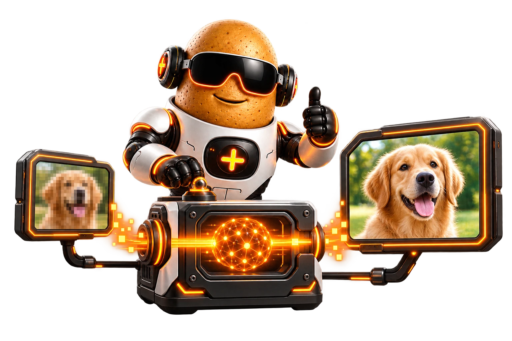

Tube TV
Build automatic and custom channels from local media, then tune the same scheduled lineup from every paired Tater Tube player.
Shared ScheduleGuideTaterText
Bring your movies, shows, music, discovery feeds, and personal live channels into one server. Every paired Tater Tube Player gets the same library, watch progress, Tube TV lineup, and playback options.
Build automatic and custom channels from local media, then tune the same scheduled lineup from every paired Tater Tube player.
Use Newznab Stream for releases and Local Media for movies, series, music, resume playback, and category browsing.
Create short-lived PINs in the web UI, give players friendly names, and revoke or rename them later.
On an Apple Silicon Mac with macOS 14 or newer, download the DMG, drag Tater Tube Server to Applications, and open it. The app starts the server, opens the dashboard the first time, and keeps everyday controls in its own menu bar icon—no Docker or Terminal setup required.
~/Library/Application Support/Tater Tube Server
Docker remains the recommended path for Linux servers and NAS systems. The web UI runs on port 8080, and login is disabled by default so setup is quick on a trusted home network.
docker pull ghcr.io/tatertotterson/tater-tube-server:latestservices:
tater-tube-server:
image: ghcr.io/tatertotterson/tater-tube-server:latest
container_name: tater-tube-server
ports:
- "8080:8080"
volumes:
- /mnt/user/appdata/tater-tube-server/config:/config
- /mnt/user/media/movies:/media/movies:ro
- /mnt/user/media/tv:/media/tv:ro
restart: unless-stoppedhttp://SERVER-IP:8080 after the container starts.The server plans the timeline ahead so every paired player sees the same program or commercial at the same moment. Automatic channels use library metadata for genres, decades, movies, and series; custom channels can include movies, entire series, seasons, or individual episodes and can claim a specific VCR-style channel number.

Upload local commercial videos into server categories. Tube TV selects only enabled categories, avoids repeats until the pool is exhausted, and keeps logos off during breaks.
Choose a logo and its screen corner for each custom channel. Automatic channels can select fitting station marks from the bundled TV logo catalog.
Channel 999 is a time-synced scrolling guide. High channel pages provide authentic blocky TaterText screens for status, now playing, server information, and controls.
Both editions run the same Tater Tube Server and dashboard. Pick the DMG for a guided Mac experience or the multi-architecture container for Linux, Unraid, and other NAS systems.
A signed and notarized menu-bar app with the server, FFmpeg, VideoToolbox hardware encoding, and built-in updates included.
Multi-architecture container image for amd64 and arm64 hosts.
docker pull ghcr.io/tatertotterson/tater-tube-server:latestSettings, player tokens, metadata, playback history, Tube TV schedules, commercial uploads, and working cache remain outside the app or container.
On macOS, add native paths such as /Users/you/Movies. With Docker, mount host folders into the container and use paths like /media/movies. Scanned metadata powers library browsing, Continue Watching, Tape Deck music, automatic channels, and the custom channel builder.
Scans titles, dates, genres, duration, and artwork into a browsable movie library.
Browses by series, season, and episode while tracking the next episode and current resume point.
Provides server albums to Tape Deck and can also preserve a source folder's directory structure.
The dashboard shows paired players and active streams. Activity keeps playback history for Tube TV, Stream, and Local with the player name, media title, time, duration, progress, and direct, software, or hardware-transcode details.
Name each paired box for its room, then rename or revoke it from the server.
See what is playing now, current progress, throughput, selected profile, and acceleration engine.
Review completed and interrupted local, Tube TV, and Newznab playback in one VCR-themed history view.
Direct-play titles do not need transcoding, but incompatible media, Tube TV, and AI processing depend on the server seeing the correct hardware. Recreate the container after changing these settings.
Install the NVIDIA driver and Container Toolkit on the host—or the NVIDIA Driver plugin on Unraid—then expose the GPU and its complete video and graphics capabilities.
services:
tater-tube-server:
image: ghcr.io/tatertotterson/tater-tube-server:latest
gpus: all
environment:
NVIDIA_DRIVER_CAPABILITIES: all
volumes:
- /path/to/tater-tube-server/config:/configUnraid: set Extra Parameters to --gpus all and add NVIDIA_DRIVER_CAPABILITIES=all as a variable.
--runtime=nvidia is optional compatibility support for older setups; current NVIDIA Container Toolkit installations normally need only --gpus all.
The image automatically selects NVIDIA's headless EGL Vulkan path when the injected GLX path cannot initialize AI processing.
Expose the host's DRM devices so the server can reach Intel or AMD hardware encoding and compatible Vulkan processing paths.
services:
tater-tube-server:
image: ghcr.io/tatertotterson/tater-tube-server:latest
devices:
- /dev/dri:/dev/dri
volumes:
- /path/to/tater-tube-server/config:/configUnraid: add a Device with /dev/dri as both the host and container path.
Leave Hardware Device blank unless a specific render node such as /dev/dri/renderD129 is required.
Apply the updated Compose or Unraid settings by recreating the container, not only restarting the old one.
Open Hardware Transcoding, run Auto Detect, confirm the encoder says Ready, and save the selection.
Open Upscaling and run Auto Detect separately to test Standard scaling, Vulkan, and every bundled AI model.
When the connected TV has more pixels than the source, Tater Tube Server can enhance compatible video with optional GPU-accelerated AI upscaling. Everything runs on your server, so paired players benefit without an app update or sending your media anywhere else.
Auto Detect tests Standard scaling, the GPU path, and every bundled AI model.
Choose FSRCNNX for general video or Anime4K and ArtCNN for animated detail.
If AI is unavailable, the server steps down through compatible models to Standard.
Built for choice, not guesswork. AI upscaling is optional and experimental. Compatibility and real-time speed depend on the GPU, drivers, source resolution, and current server load.
